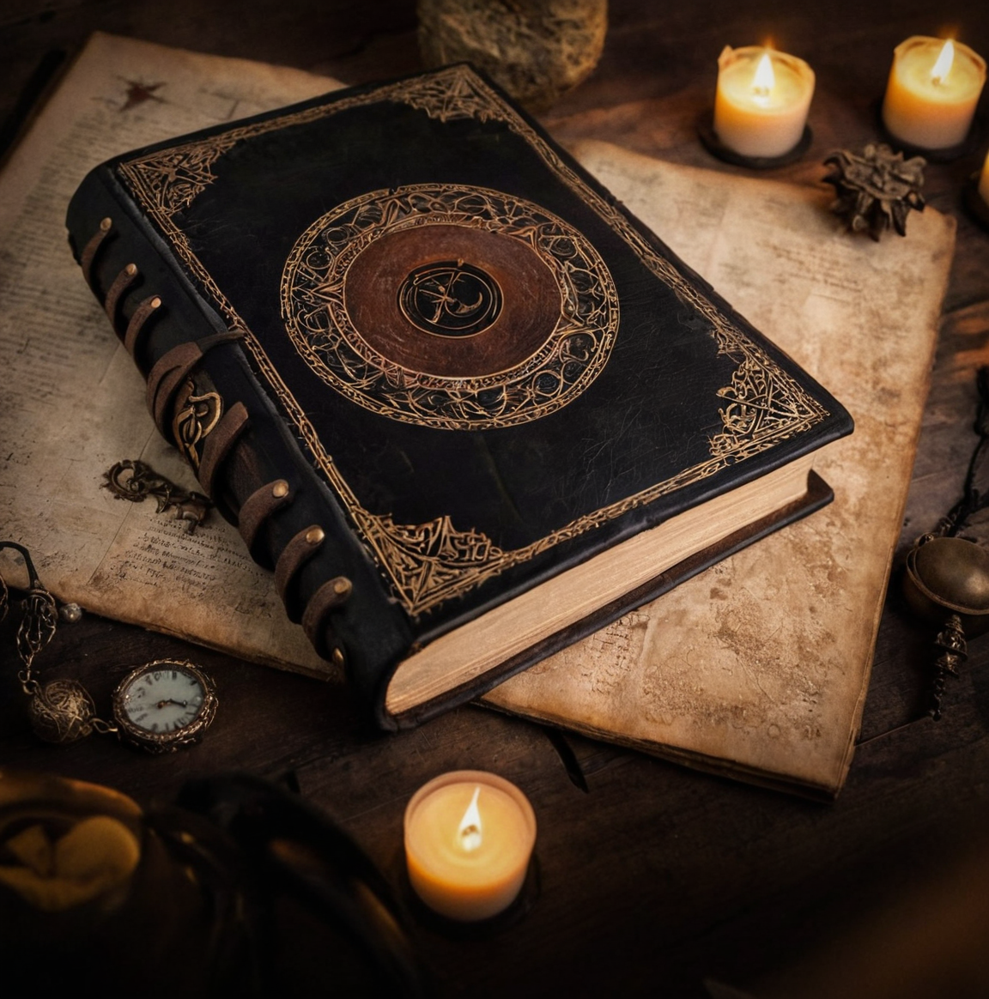

Bem-vindo
Entre no mundo místico de Heilanthir Yorgalan, um enigmático necromante élfico, personagem da aventura de RPG "Dungeons and Delicacies - Dungeons e Comidinhas". Aqui, você descobrirá as profundezas da jornada de Heilanthir, desde seus primeiros dias na mágica cidade portuária de Réquieldor até sua busca incansável pelo domínio necromântico.
Heilanthir é um personagem de muitas facetas – um indivíduo de intelecto profundo e curiosidade sem limites. Apesar de sua vocação sombria, ele possui uma inteligência afiada e um espírito jovial, muitas vezes surpreendendo aqueles que esperam apenas escuridão de um necromante. Sua dupla paixão pelas artes arcanas e pelas ciências da cura o diferenciam, fundindo o proibido com o benevolente em sua busca única pelo conhecimento.
Explore sua história, mergulhe nos feitiços e poções que ele domina e testemunhe os conflitos que surgem de suas obsessões. Este site é dedicado a mostrar todos os detalhes da ficha de personagem de Heilanthir, incluindo suas habilidades, feitiços e os desafios pessoais que ele enfrenta.
História
Heilanthir Yorgalan nasceu em Dóralto, uma das regiões da cidade portuária élfica de Réquieldor, um lugar onde a magia flui livremente e a vida prospera em harmonia com a natureza. Filho de uma antiga e nobre família de elfos, cujas tradições mágicas eram tão antigas quanto as árvores-anciãs dos bosques de seu lar ancestral, Heilanthir demonstrou desde jovem um talento inato para a magia, muito além dos seus companheiros élficos. Enquanto seus pares se dedicavam às artes arcanas tradicionais, ele se destacava por sua inteligência e fascinação pelos mistérios da alma e da morte, temas considerados tabu e até mesmo perigosos entre os elfos. Porém, o medo da rejeição por seus pares nem sequer arranhou seus interesses por tais temáticas: ele as perseguiu com o máximo de dedicação. Não demorou muito para que ele concluísse que a NECROMANCIA seria a única escola de magia capaz de saciar sua sede por tal conhecimento.
Sentindo-se atraído cada vez mais pelos mistérios da necromancia, Heilanthir encontrou apoio e compreensão apenas em sua irmã gêmea, Lynwen, sua única confidente. Ela sempre apoiou suas buscas e compartilhava (e ainda compartilha) de sua curiosidade inata, tornando-se a pessoa em quem ele mais confiava (e a que ainda mais confia).
Além de seu interesse pela necromancia, Heilanthir tem um fascínio por medicina, artes de cura, herbalismo, criação de poções e alquimia. Ele acredita que o verdadeiro entendimento da morte exige um profundo conhecimento de como curar e preservar a vida. Suas habilidades em criar poções e remédios tornam-no valioso para sua comunidade, mesmo que suas práticas mais sombrias sejam mantidas em segredo.
Heilanthir é uma pessoa bem-humorada e sarcástica, sempre pronto com uma resposta afiada ou um comentário espirituoso. Sua natureza jovial esconde a intensidade de sua busca por conhecimento, e muitos se surpreendem ao descobrir a profundidade de seu compromisso com a necromancia. Ele é bom e sempre bem-intencionado, mas quando encontra algo que o interessa, pode ficar cegamente obcecado: essa obsessão constantemente o leva a tomar riscos que outros considerariam imprudentes, mas para ele, são necessários para atingir seus objetivos. Em suas aventuras, ele confia em suas habilidades de conjurador, seu conhecimento em necromancia, medicina, alquimia e a esperança de que um dia possa transcender as limitações de sua arte, sem perder-se nas trevas que constantemente o cercam...
Ficha do Personagem
Bio:
- Nome: Heilanthir Yorgalan
- Raça: Elfo
- Idade: 259 anos
- Classe: Conjurador
- Vocação: Mago Necromante
- Altura: 1,92 m (192 cm)
- Idiomas: Élfico, Comum e Infernal
Complicações:
Família:Existe uma percepção muito equivocada (e até mesmo preconceituosa) a respeito dos caminhos da necromancia. A família de Heilanthir o recebe com desconfiança, na melhor das hipóteses, e, na pior, hostilidade*. Como se isso não fosse o suficiente, ainda há um agravante: raramente, seus parentes falecidos vão ao seu encontro para exigir que ele cumpra certas obrigações ou desejos não realizados durante as suas vidas.
*OBS: Há uma exceção - Sua irmã, Lynwen Yorgalan.
Conhecimento Proibido: Heilanthir sempre foi fascinado pelos mistérios da alma. Sua jornada pela necromancia o levou a explorar ruínas antigas, bibliotecas esquecidas e rituais proibidos. Apesar de suas habilidades formidáveis, ele ainda buscava um conhecimento que transcendesse a necromancia comum. Durante suas pesquisas, ele descobriu vagas referências a um tomo que prometia o impossível: a concepção de almas artificiais! Intrigado (e um tanto obcecado), Heilanthir decidiu buscar este artefato perdido, e sua jornada o levou a uma câmara oculta, selada com runas infernais, no fundo de um complexo de cavernas em um vulcão adormecido. Enquanto ele estava estudando as runas e se preparava para reverter o selamento, uma risada macabra emana dos portões, seguida por uma fala de tom oscilante - *"eLe É peRFeItO!"*; logo em seguida, os selos somem e os portões se abrem. Ali, no centro da câmara, havia apenas um pedestal de obsidiana e nele havia apenas um único livro: CODEX ANIMA PLASMATIO (Códice da Plasmagem de Alma), envolto em uma aura de poder e malevolência.
Ao tocar o grimório, Heilanthir foi assaltado por visões de planos infernais: vastos desertos de fogo, rios de almas atormentadas e seres infernais de imenso poder. O codex, escrito em uma linguagem infernal, pulsava com energia necromântica. Ele sabia que este grimório não era apenas um livro, mas um portal para conhecimentos profanos dos planos infernais.
Heilanthir levou-o consigo, estudando seus segredos e dominando a arte da plasmagem (criação e modelagem) de almas. No entanto, ele percebeu que o grimório exigia um preço. A cada feitiço que aprendia, sentia uma conexão mais profunda com os planos infernais, e os sussurros das entidades diabólicas que haviam criado o livro tornavam-se mais audíveis...
Para manter a influência desses seres bem longe de sua mente e espírito, ele trancou o codex em um baú encantado (encomendado com um mago períto em feitíços de selamento), onde o mantem em segredo desde então.
Instabilidade do Foco Mágico: O foco mágico de Heilanthir é um par de anéis (chamados de os gêmeos), sendo que um é especializado em refinar e o outro em transformar. A presença de um estabiliza o outro, sendo que a ausência de um deles leva a instabilidade progressiva do outro: poder mágico do anel-órfão (aquele que continuou em uma das mãos do portador) começa a se descontrolar, resultando em efeitos imprevisíveis e potencialmente perigosos sempre que o personagem lançar um feitiço.
Magias e Habilidades
Habilidades de Conjurador (Padrão):
- Sentir Magia: Um Conjurador pode fazer um teste de MEN para detectar a presença de magia nas proximidades;
- Conjurar Magias: Um Conjurador pode lançar magias de acordo com as regras de Conjuração de Magias descritas adiante;
- Recuperação Arcana: Um Conjurador pode recuperar um número de cargas igual ao seu Nível ao completar um descanso curto, desde que não faça tarefas pesadas durante. Ele deve completar um descanso longo antes de utilizar esta habilidade novamente;
- Magias Conhecidas Iniciais: Um Conjurador começa conhecendo 3 magias e aprende uma magia adicional a cada nível. O número máximo de magias que um Conjurador pode aprender é igual a MEN + Nível.
Habilidades Élficas:
- Nível Atual: LVL1.
- LVL1:
- Adeptos à Magia: Ganham uma magia extra e usam o atributo Mentr para ela;
- Transe: Elfos não dormem, apenas meditam por 4 horas para obter o descanso longo. São imunes a efeitos de sono.
- LVL4:
- Proficiência Élficа: Escolha uma escola de magia ou um tipo de arma;
- Arma: Reduz a margem de ameaça em 1, dá +2 de dano, e pode re-rolar o dano da arma, escolhendo o maior resultado;
- Magia: Pode lançar uma magia por dia sem custo.
- LVL8:
- Raça Nobre: Invoca os poderes dos antepassados, regenerando metade dos seus espaços de magia.(uma vez por dia).
Lista de Magias Conhecidas:
- Animar Mortos: O Conjurador cria um número de mortos-vivos (zumbis ou esqueletos) com a combinação de até (Nível) em DV. Entretanto, eles podem resistir à magia e o atacar;
- Beijo da Morte: Tocando o alvo (ataque mágico), o conjurador o mata instantaneamente se esse possuir um (Nível) igual ou menor que o seu e se estiver com menos da metade de seus PV. Pode ser resistida;
- Consultar Entidade Sobrenatural: O Conjurador contata uma entidade sobrenatural para perguntar (Nível) perguntas. Esse ritual demora (Nível) turnos e o Mestre determina a reação da entidade. (HABILIDADE ADEPTOS À MAGIA);
- Curar Feridas: Tocando o alvo (magia corpo-a-corpo), o Conjurador recupera 1d6 Pontos de Vida por (Nível) do alvo tocado.
Inventário
Armas & Equipamentos:
- Arma Primária Equipada: uma adaga do tipo swordbreaker (Arma Média);
- Arma Secundária Equipada: uma faca do tipo karambit - uma um pouco mais longa (Arma Pequena);
- Escudo Equipado: Não;
- Armadura Equipada: Armadura Leve;
- Moedas: 3 moedas de cobre;
Inventário (Mochila):
- - 1x Grimório (Nome: Nocturnia);
- - 1x Mochila;
- - 1x Cantil;
- - Ração, por dia (60 dias);
- - 1x Pederneira;
- - 1x Vara de 3m;
- - 1x Tocha, pacote de 5;
- - 3x saco pequeno (2 deles cheios com ossadas de animais de pequeno e médio porte - corvos, esquilos, lobos, etc.);
- - 3x saco grande (2 deles cheios com ossadas de diferentes espécies grandes - humanos, elfos, ursos, etc.);
- - 1x Pé de Cabra;
- - 1x Arpéu;
- - 1x Corda, 15 m;
- - 1x Martelo, pequeno;
- - 3x Pino de ferro, 3 unid;
- - 2x Ervas Comuns Sortidas;
- - 1x Ervas Avançadas sortidas;
- - 15x Frascos Vazios Sortidos;
- - 1x Pena e frasco de tinta;
- - 1x Lanterna;
- - 5x Óleo, 1 frasco;
- - 1x Espelho de mão;
- - 1x armadura leve;
- - 1x Ferramenta de Trabalho - Ferramentas de Herbalismo;
- - 1x Ferramenta de Trabalho - Ferramentas de Artesão/Escultor;
- - 1x Baú Encantado (MÁGICAMENTE SELADO - ESTÁ INDISPONÍVEL PARA USO E EXIGE RITUAL PARA ABRI-LO).
Galeria de Imagens
Irmãos Yorgalan:

Irmãos Yorgalan: Heilanthir Yorgalan (esquerda) | Lynwen Yorgalan (direita)
Cidade Natal (Réquieldor):

Cidade de Réquieldor: Canais de Andaluz (esquerda) | Dóralto (direita)
Foco Mágico:

Foco Mágico: Olho do Abismo (esquerda) | Farol da Divindade (direita)
Grimório:
Grimório: Noctúrnia
Conhecimento Proibido:

Codex Anima Plasmatio
Links Úteis
Links úteis: Recursos sobre RPG e necromancia...(EM BREVE)